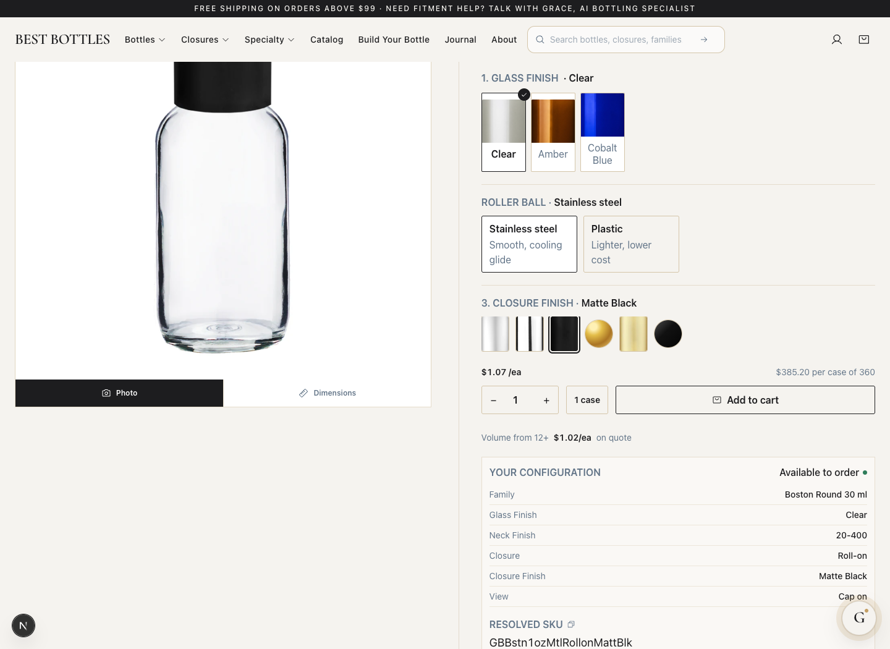
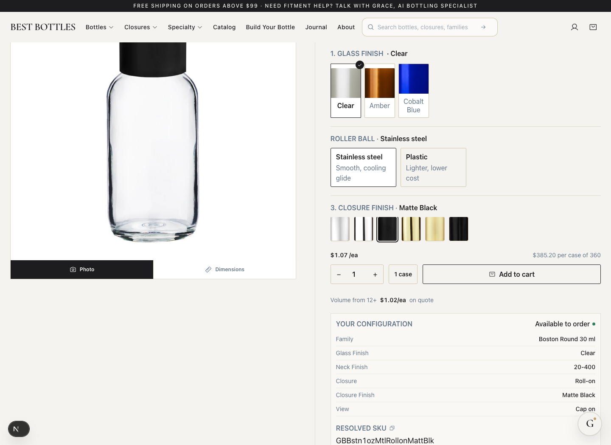
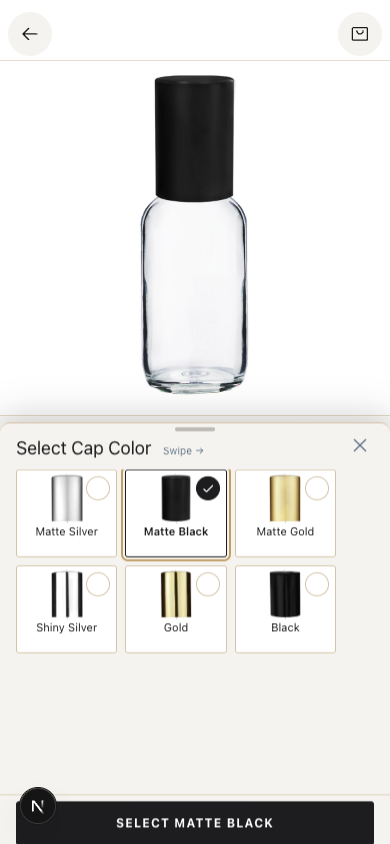

Before

After

Existing cap photographs now cover all six offered finishes. Gold and Black previously showed color dots. The two views below use the same 1440 × 1050 capture size and display width. Local review only; no asset approvals or publication.


